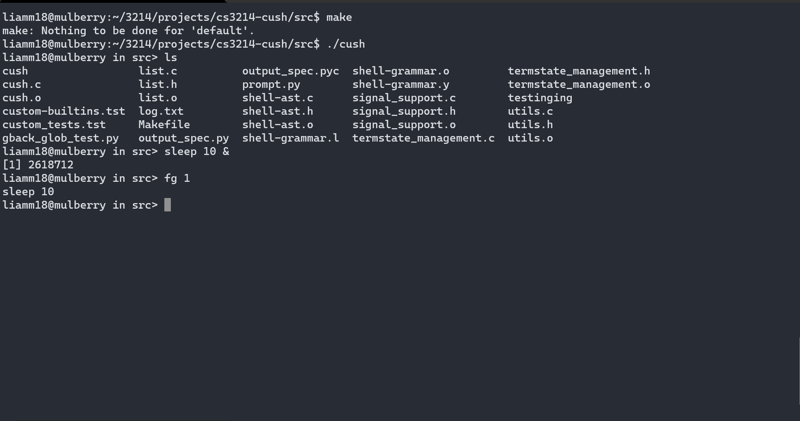

Projects
"AFKer"
This is a small, simple python program for going "afk" (Away From Keyboard) in video games. Features include the ability to choose the amount of time between each in game movement, check for respawn button and savable profiles for each game. While this project my not be insanely complicated, it is one of my first personal projects that I successfully made based off of a problem that I was facing (getting kicked for being AFK).

~See the code~
Rocket League Self Driving Car
The title of this project is a bit misleading as the car does not quite drive itself yet. However, with the win32api, OpenCV and Numpy this program can successfully identify and track the ball on the screen. This is currently a work in progress and in the future I hope to implement a convolutional neural network and produce a data set to train a model. I have already written a function to record my key inputs (key_list.py) I just need to do some more research.

~See the code~
Custom Shell
This is a relatively standard shell implementation. Commands are issued by typing the name of whatever command you want to run and pressing enter. Pipes, i/o redirection, running programs that require exclusive access to the terminal, and redirecting stderr are all supported. Jobs are controlled via the given job_list struct and a list of job/pid pairs for fetching a job a given a certain pid. Click the link below to view an in depth README for the project.
README
Web Server
A small personal web server that can serve files, stream MP4 video, and provide simple token-based authentication API. Persistent connections as per the HTTP/1.1 protocol were also implemented. The final part of the project involved hosting a small react-app on an AWS node.
Contact me:
Email: liamm18@vt.edu
LinkedIn: https://www.linkedin.com/in/80-liam-mcfadden/
GitHub: https://github.com/LiamMcFadden